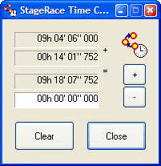

StageRace comes with the Time Calculator tool.
From within StageRace the Time Calculator can be started through in the menu.

With this tool times can be added and subtracted, quickly and easy.
Pay attention that the times have to be entered from the left to the right side. Thus first tens of hours, then hours, tens of minutes, minutes, etcetera. The maximal accuracy is 1/1000th of a second, in accordance with StageRace.
With the buttons + and -, the operation can be executed.
With the subtraction of times, the order of the entered times is not important, since the result will always be given as a positive result.